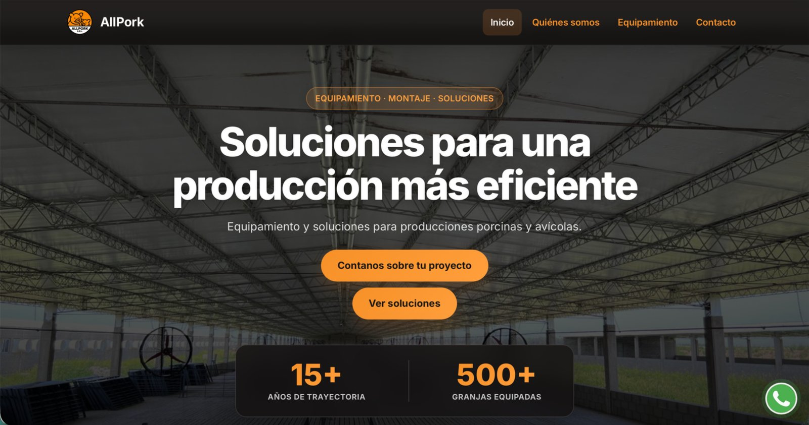
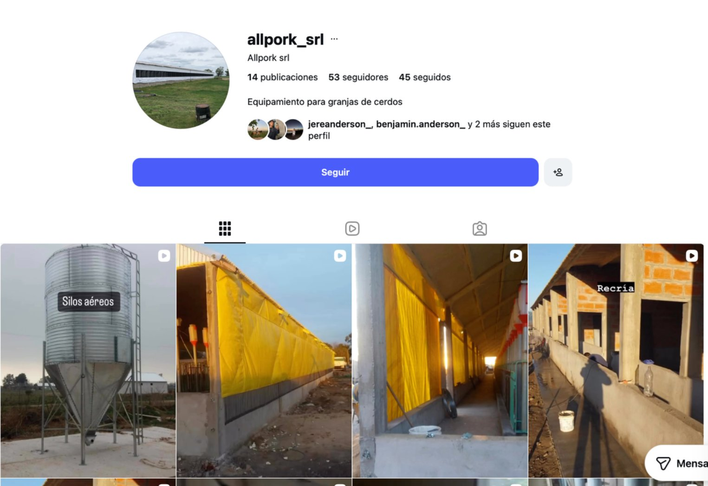
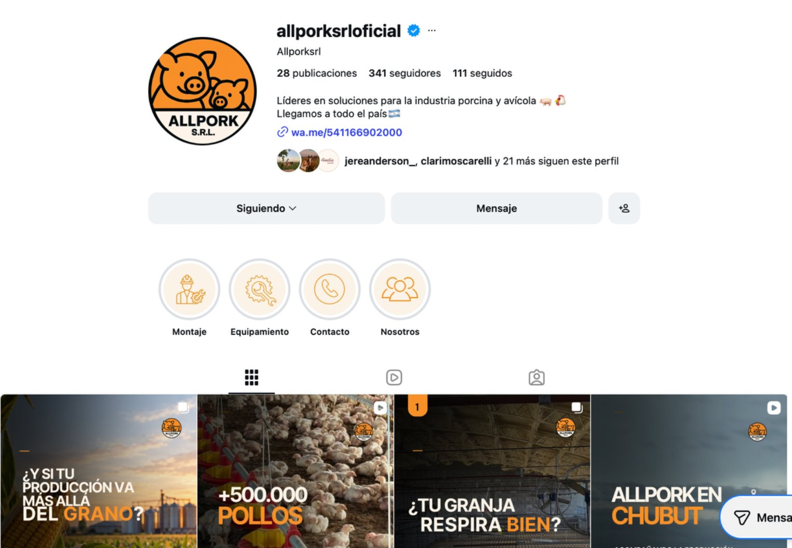
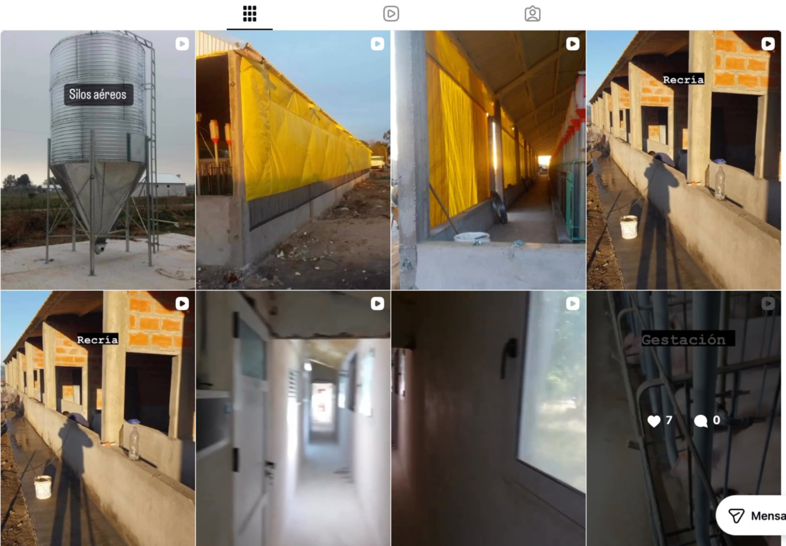
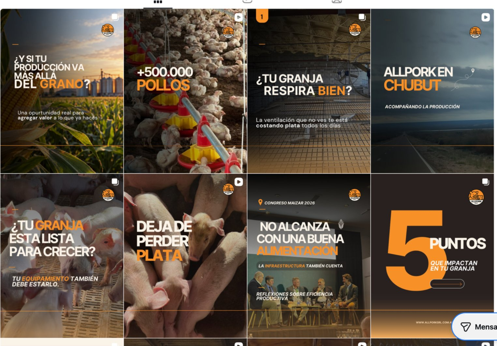
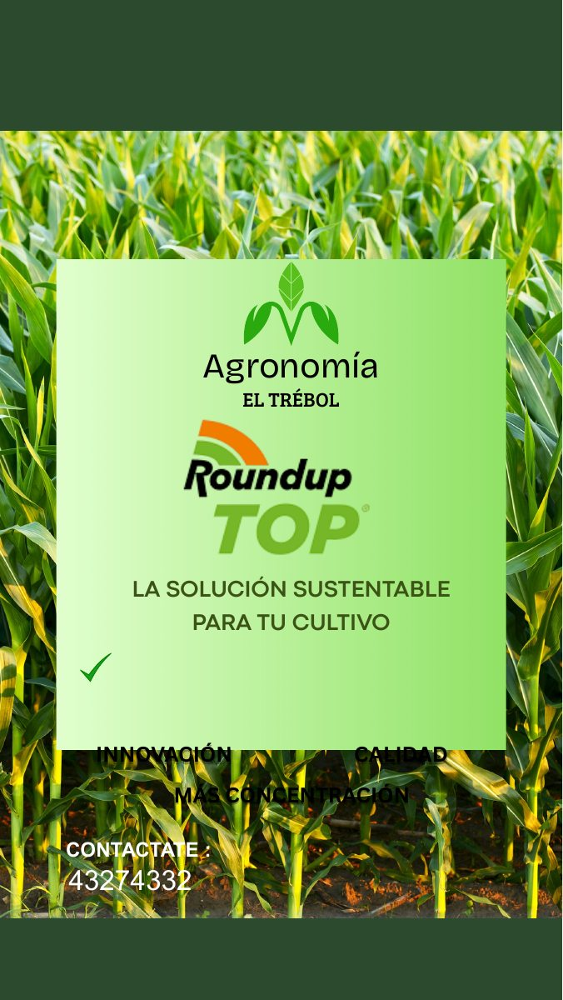
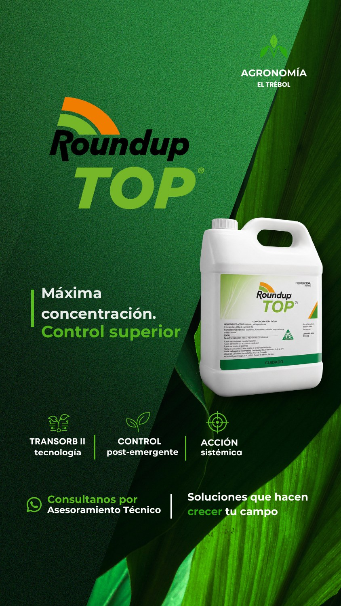

Estrategia y comunicación de marca
Definición de mensajes, posicionamiento, identidad y planificación para construir una comunicación coherente con el negocio y su público.
Posicionamiento · Identidad · PlanificaciónConsultar por este servicioMarketing agropecuario, estrategia de comunicación, gestión de redes sociales y desarrollo web para empresas y profesionales del agro. Combino conocimiento técnico del sector con herramientas de marketing para comunicar soluciones, fortalecer marcas y generar oportunidades comerciales.

Soy Amelia Carrascosa, Técnica Universitaria en Producción Agropecuaria graduada en la UCA y creadora de Amelia Comunica Agro.
Desde Amelia Comunica Agro trabajo en marketing y comunicación digital para empresas, marcas y profesionales del sector agropecuario. Mi formación técnica me ayuda a comprender los temas productivos y a transformarlos en mensajes claros, relevantes y adecuados para cada público.
Mi enfoque va más allá de lo visual: busco que cada contenido tenga un propósito, explique el valor de una solución y acompañe los objetivos de comunicación y comerciales de la marca.
Desde la planificación hasta la presencia digital: servicios que se adaptan a las necesidades y objetivos de cada empresa del agro.
Definición de mensajes, posicionamiento, identidad y planificación para construir una comunicación coherente con el negocio y su público.
Posicionamiento · Identidad · PlanificaciónConsultar por este servicioGestión de redes, ideas, guiones, publicaciones y piezas digitales que presentan productos, servicios y experiencias de manera profesional.
Gestión · Contenido · Producción digitalConsultar por este servicioTransformo información técnica en mensajes claros para productores, profesionales y empresas, destacando el valor de cada solución sin perder precisión.
Contenido técnico · Productos · SolucionesConsultar por este servicioSitios web profesionales, adaptables a celulares y pensados para presentar tu empresa, organizar sus servicios y facilitar nuevas consultas.
Diseño web · Presencia digital · ContactoConsultar por este servicio Conocé el servicio web ↗¿No sabés qué servicio necesita tu empresa? Podemos evaluar juntos una propuesta según tus objetivos.
Contame sobre tu proyecto ↗Explorá cómo podemos trabajar la presencia digital de tu empresa, desde una web profesional hasta la comunicación estratégica en redes sociales.
Sitios para presentar productos y servicios, fortalecer la marca y facilitar consultas comerciales.
Conocer desarrollo web agro ↗Estrategia, gestión de redes sociales y contenido técnico-comercial para empresas agropecuarias.
Conocer gestión de redes sociales ↗Diseño sitios web para empresas del agro que necesitan presentar sus productos y servicios, transmitir confianza y facilitar nuevas consultas comerciales.
Consultar por mi sitio web ↗Una propuesta adaptada a tu empresa, tus objetivos y tus clientes.
Más que una tarjeta de presentación: un lugar propio para explicar qué hacés y cómo pueden contactarte.
Tu empresa, trayectoria, productos y servicios organizados con claridad.
Una experiencia clara tanto desde el teléfono como desde la computadora.
Accesos a WhatsApp, email y formularios para facilitar las consultas.
Mensajes pensados para explicar soluciones técnicas y transmitir valor comercial.
Proyectos reales y experiencias que muestran cómo la comunicación y la presencia digital acompañan a los negocios del agro.

Desarrollo de una marca especializada en comunicación para el agro: posicionamiento, propuesta de valor, identidad y contenidos para empresas y profesionales.

Ver caso de estudio ↓Una presencia digital más completa para una empresa de equipamiento, montaje y asesoramiento técnico para producciones porcinas y avícolas.
Explorar proyecto ↓Una empresa de equipamiento y soluciones para la producción porcina y avícola. Un proyecto que integra desarrollo web, marketing y comunicación con conocimiento del sector.
Diseño y desarrollo de un sitio que organiza la propuesta de la empresa, presenta sus servicios y facilita el contacto con potenciales clientes.
Conocer la web de AllPork ↗



De 53 a 341 seguidores (+543%). Comparación de dos capturas proporcionadas para el portfolio; no implica atribución exclusiva a las acciones de marketing.
Contenido sobre ventilación, equipamiento, eficiencia productiva y oportunidades de inversión. Temas que conectan las soluciones de AllPork con las decisiones de sus potenciales clientes.
Una propuesta de rediseño para explorar cómo la jerarquía visual, el orden de la información y la presentación de un producto pueden mejorar una pieza de comunicación comercial agropecuaria.

Una pieza con varios mensajes y elementos compitiendo por la atención.

Mayor protagonismo del producto, jerarquía tipográfica y organización de sus características.
El ejercicio trabaja la identidad visual, la lectura de la pieza y la comunicación de un producto agropecuario para presentar la información de manera más ordenada y comprensible.
Ejercicio conceptual creado para portfolio. Ambas piezas fueron realizadas como ejemplo de antes y después; no representan una campaña contratada ni resultados comerciales de Agronomía El Trébol.
Cada marca tiene algo que explicar, una audiencia a la que llegar y objetivos que orientar.
Conocer la propuesta, el público y el contexto antes de definir qué comunicar.
Encontrar el enfoque y el lenguaje adecuados para expresar el valor de cada producto o servicio.
Transformar la estrategia en materiales coherentes con la marca y sus canales.
Aprender de la respuesta del público y detectar oportunidades para seguir mejorando.
Contame qué hace tu empresa, qué necesitás comunicar y cuáles son tus objetivos. Podemos evaluar una propuesta de contenido, estrategia o presencia digital adaptada a tu proyecto.
Hablemos por WhatsApp ↗Completá tus datos y contame qué necesitás comunicar. Te responderé por email.